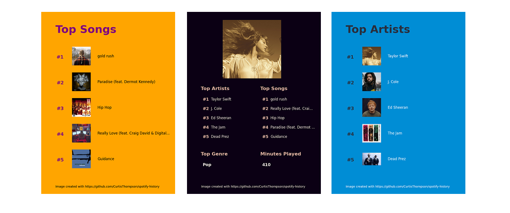

Spotify History Analyser
DateJuly 2021
RoleSolo Project
TechnologiesPython
DescriptionDo you want to understand your Spotify listening history better? Well, you could wait for Spotify Wrapped at the end of the year... or you could use this repository. The Spotify History repository allows you to produce infographics that highlight your top artists, songs, and genres - as well as a summary infographic similar to the one found in Spotify Wrapped.

Features
- Summary visualisations
- Artist visualisations
- Song visualisations
- Genre visualisations
- PDF of main statistics
- Integration with the Spotify API
Questions
Once you have pulled the GitHub repository, follow the steps set out in the README. This will allow you to obtain your listening history data and get you set up with the Spotify API. You can then run the main Python file to produce visualisations.
Each visualisation created with this repository follows the same general structure (except for the summary visualisation). You can modify the methods in the create_visualisations.py file to make different visualisations.